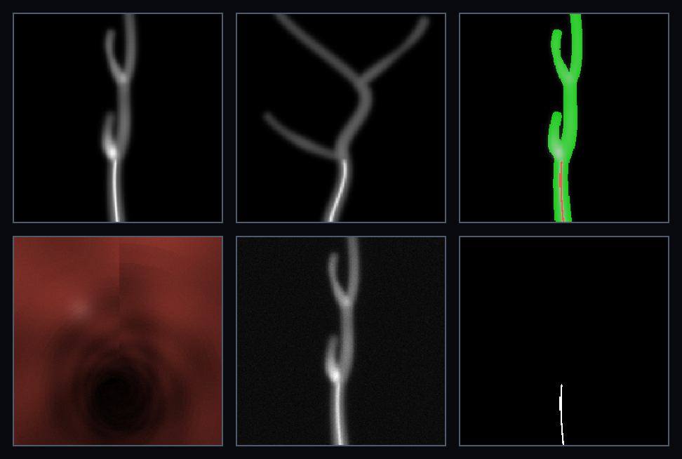
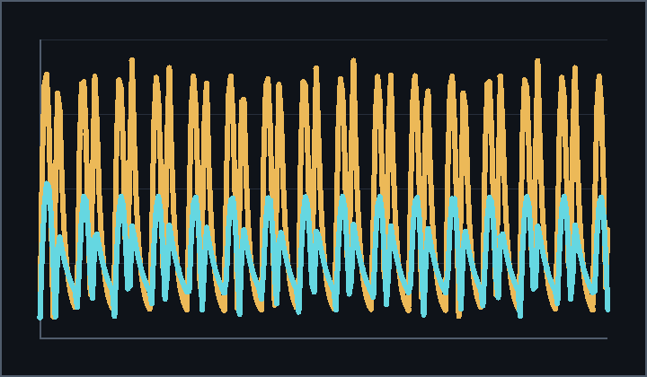
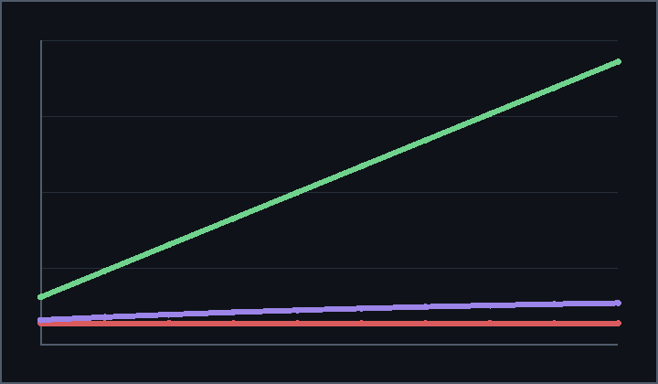
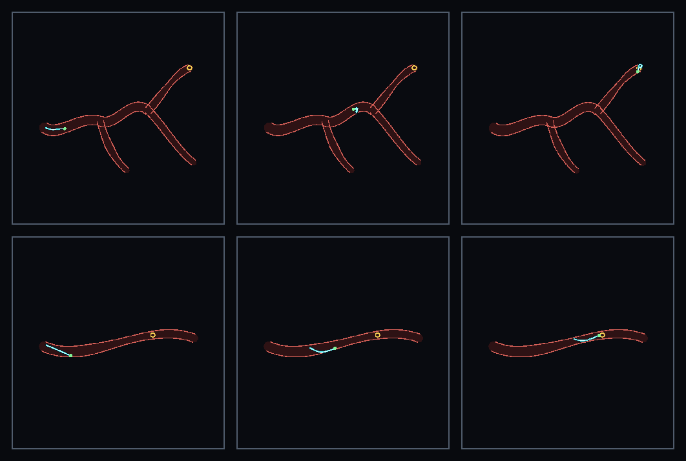

Procedural vascular trees, tube-intrinsic contact, and safety-scored navigation from one replayable run.

Biplanar DRR, device/vessel masks, keypoints, noisy detector physics, and endoscopic RGB are emitted as training data.
obs: image + masks + keypoints


Reduced-order fast paths expose the hard clinical signals agents need: stasis, retrieval, fragmentation, aspiration, and flow recovery.

github.com/SeldingerMed/seldinger-lumen
seldingermed.github.io/seldinger-lumen